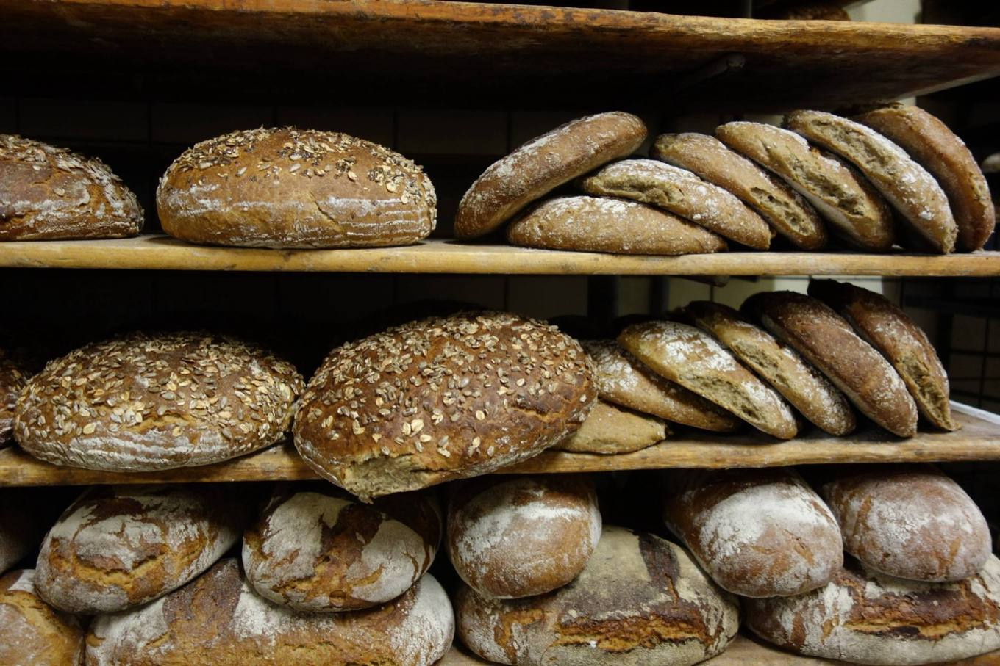
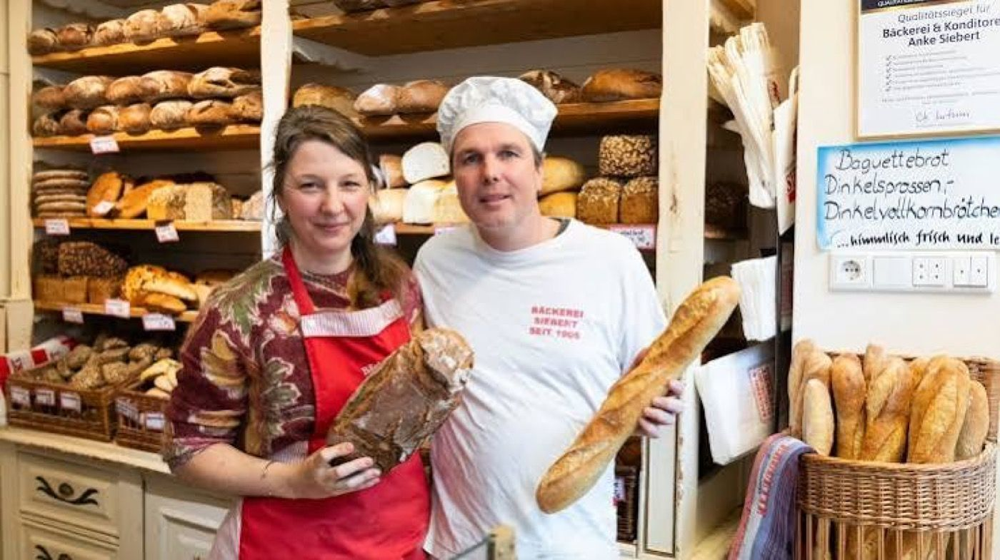
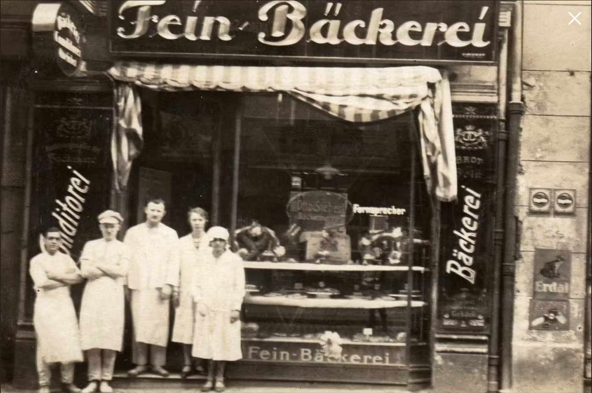
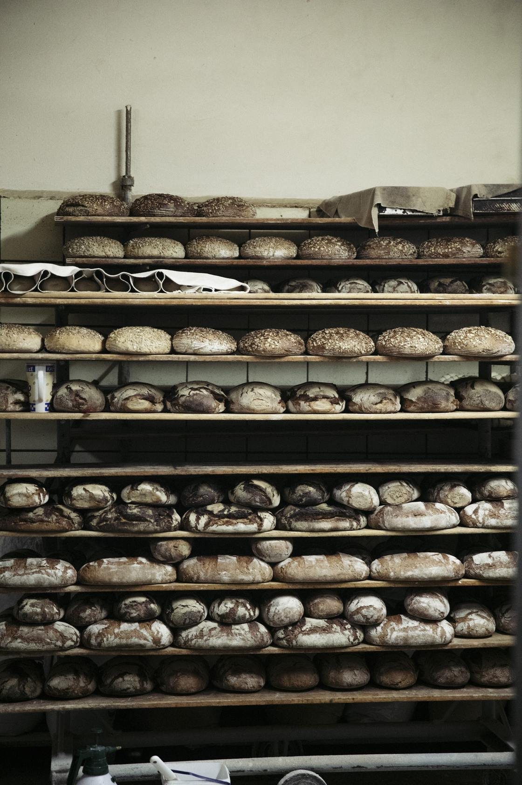
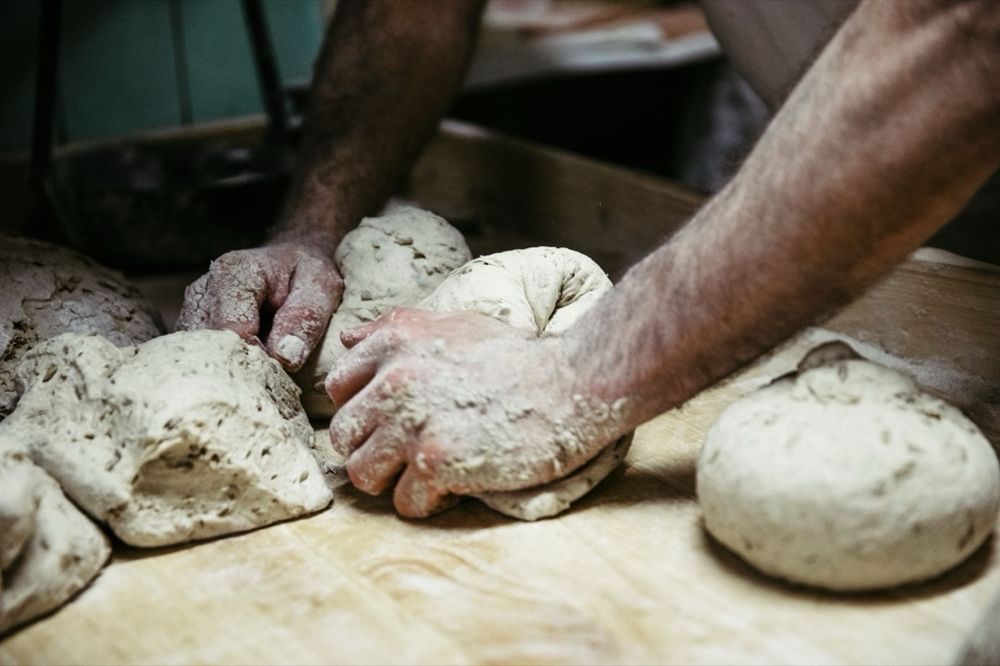
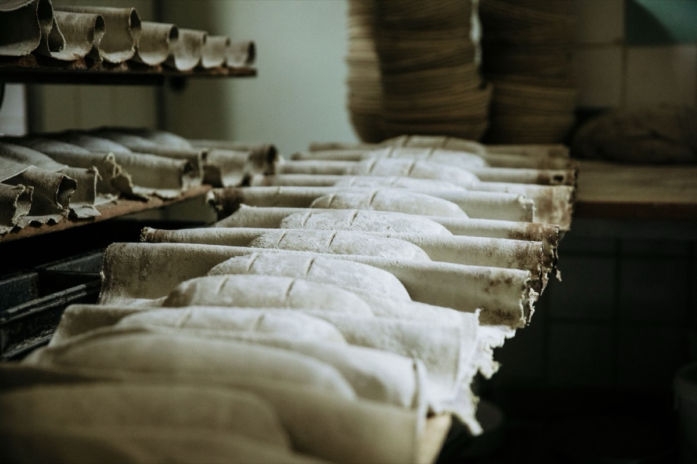
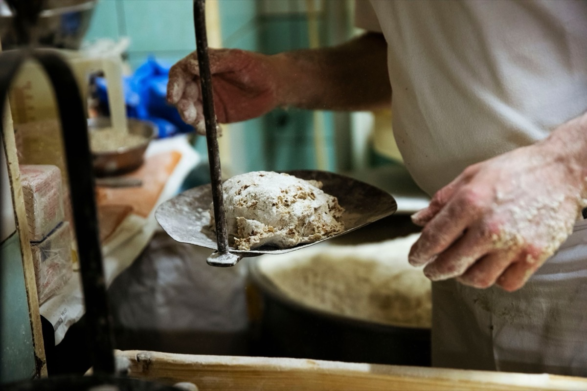

Echtes Brot, seit 1906
Fünf Generationen an einem Ort im Prenzlauer Berg. Ausschließlich eigene Herstellung, nach alten Rezepten auf Steinplatten gebacken. Ohne Tiefkühlteig, ohne Backmischung.
1906 frisch aus dem Ofen


Hundertzwanzig Jahre, ein Haus
Gustav Siebert, aus Ostpreußen, eröffnet 1906 in der Schönfließer Straße. Er führt das Haus durch Kaiserreich und Ersten Weltkrieg.

- 1906GustavDer Gründer
Gustav Siebert, aus Ostpreußen, eröffnet 1906 in der Schönfließer Straße. Er führt das Haus durch Kaiserreich und Ersten Weltkrieg.
- 1929OttoGustavs Neffe
Nach Gustavs Tod übernimmt sein Neffe Otto Siebert. Er hält den Betrieb durch den Zweiten Weltkrieg und die Nachkriegszeit, als die Familie im Konditorraum schläft.
- DDRBodoOttos Sohn
Bodo Siebert verteidigt das private Handwerk gegen Mangelwirtschaft und Verstaatlichungsdruck.
- 1990LarsBodos Sohn
Lars Siebert übernimmt nach der Wende. Er bewahrt die Ost-Rezepte und macht den Laden zur Kult-Institution.
- 2021Dr. AnkeLars’ Tochter
Dr. Anke Siebert, promovierte Wirtschafts- und Umweltwissenschaftlerin, übernimmt in fünfter Generation.
- 2026heute
120 Jahre. Und ein Goldenes Ticket im Lostopf.
Sortiment
Was heute in der Auslage liegt

Handwerk
Unsere wichtigste Zutat ist Zeit
Abends angesetzt
Sauerteig aus Mehl, Wasser und Zeit. Keine Fertigmischung im Haus.

12 bis 16 Stunden Reife
Über Nacht entstehen Geschmack und Bekömmlichkeit. Quellstücke für Vollkorn: rund 16 Stunden.

Morgens von Hand
Nach alten Originalrezepten, jeden Tag. Rohstoffe fast ausschließlich aus Berlin und Brandenburg.

Torten auf Bestellung
Wir backen das für Sie
030 44 57 576Hochzeit, Geburtstag, Firmenfeier. Bestellung telefonisch oder im Laden. Mehrfach von DER FEINSCHMECKER unter die besten Bäcker Deutschlands gewählt.
Heute noch frisches Brot?
Öffnungszeiten
| Montag | Ruhetag |
| Dienstag bis Freitag | 6:00 – 18:30 |
| Samstag | 6:00 – 13:30 |
| Sonntag / Feiertag | geschlossen |
Hierher
Schönfließer Straße 12, 10439 Berlin
Prenzlauer Berg, am Arnimplatz
S+U Schönhauser Allee, 5 bis 7 Minuten zu Fuß. Tram M1/M13.